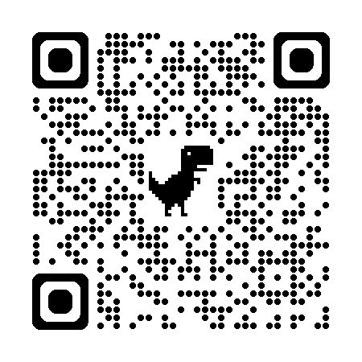
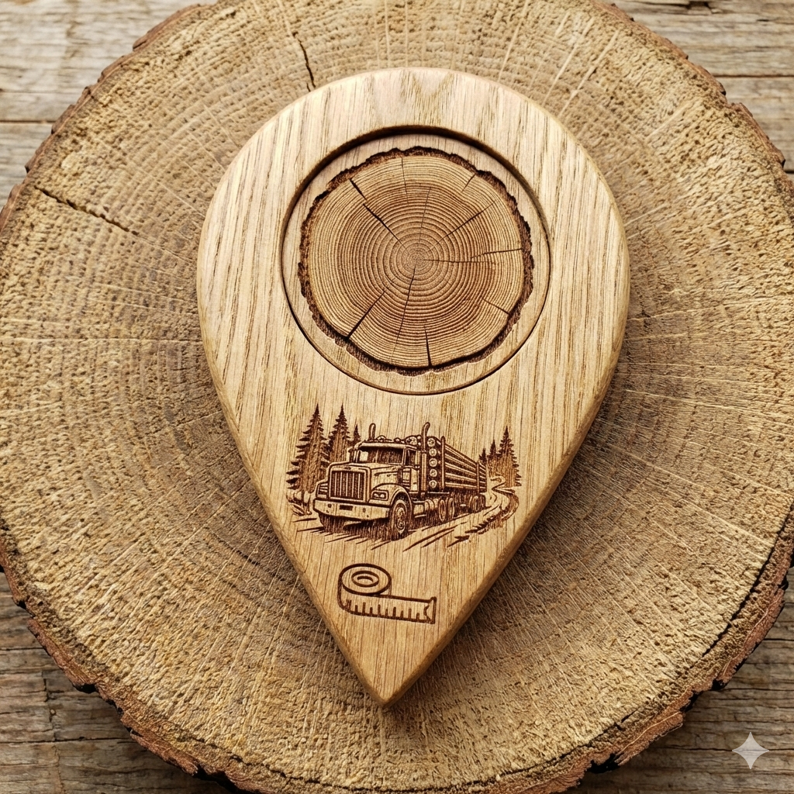
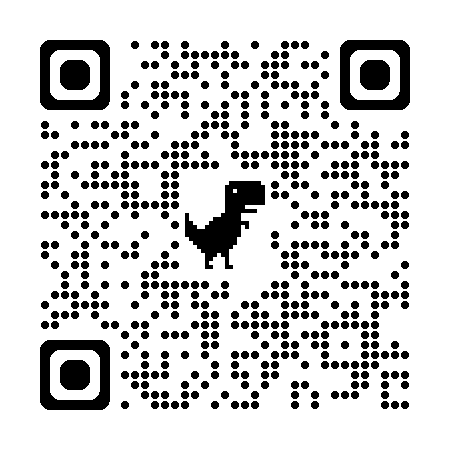

立木調査 v2.4
胸高直径等を入力し保存、CSV出力する毎木・プロット調査用アプリ。紙野帳をデジタル化します。音声入力に対応。
注意！：オフラインでの音声入力はios端末だけ使用できます。
アプリを開く スマホで読取
スマホで読取
現場の課題を生成AI×Web技術で解決する
本サイトでは、スマート林業の推進を目指し、現場で手軽に使えるWebアプリを公開しています。手元のスマホやタブレットで林業DXを体験してください。
電波の届かない山奥でも動作し、現場でのデータ収集を効率化します。
各アプリは以下の手順で画面へ追加し起動してください。なお追加までに少々時間がかかります。
・Android端末；各リンクを「chrome」で開く→「ホーム画面に追加」→「インストール」→ホーム画面のショートカット（アイコン画像）から起動
・ios端末；各リンクを「Safari」で開く→「共有」→「ホーム画面に追加」→ホーム画面のショートカット（アイコン画像）から起動
胸高直径等を入力し保存、CSV出力する毎木・プロット調査用アプリ。紙野帳をデジタル化します。音声入力に対応。
注意！：オフラインでの音声入力はios端末だけ使用できます。
アプリを開く
スマホで読取
GPSの緯度経度を平面直角座標系へ変換した座標を保存、CSV出力する地図アプリ。CSVのドラッグドロップ機能でPC管理に対応。またGeoJSONファイル出力でQGIS等と連携
アプリを開く スマホで読取
スマホで読取
 スマホで読取
スマホで読取
※下の”音声入力＆電卓入力版”をお使いください。このアプリは近日中に閉鎖します。
末口直径等を入力し保存、CSV出力する丸太検知用アプリ。紙野帳をデジタル化します。音声入力に対応。
注意！：オフラインでの音声入力はios端末だけ使用できます。
アプリを開く
スマホで読取末口直径等を入力し保存、CSV出力する丸太検知用アプリ。紙野帳をデジタル化します。状況に応じて音声入力、電卓入力を切替。
注意！：オフラインでの音声入力はios端末だけ使用できます。
アプリを開く スマホで読取
スマホで読取


スマホで読取AIが林内写真からおおまかな「用材割合」を自動診断。グーグルのティーチャブルマシンで機械学習したモデルを活用しています。
使い方：お使いのブラウザで開き、そのまま使用してください。
注意！：実験的なツールです。最終的な用材割合の判断は「皆さまの目」でお願いします。
お願い：AIの精度を向上するため、ぜひ林内写真の提供をお願いします！※位置情報は事前に消去します。
アプリを開く スマホで読取
スマホで読取
樹幹上部まで写るように縦長（16:9等）で撮影してください。また曲りやクマ剝ぎ等が写るよう山側から撮影してください。（以下、撮影例）
あらかじめ撮影した複数枚の林内写真を一枚ずつアプリでAI診断し評価値の平均を用材割合の目安にしてください。


一林業普及指導員が現場ニーズを踏まえ、生成AIを活用して個人開発しているツール集であり、林業現場のデジタル化（林業DX）に貢献することを目的に公開しているためです。
PWA（Progressive Web Apps）という技術を使用しているため、一度読み込めば圏外でも動作可能です。ただし、初回起動や更新時は通信が必要です。
入力したデータはブラウザ内のローカルストレージにのみ保存され、外部サーバーに送信されることはありません。なおAI診断の精度向上のため、（位置情報を削除した）林内写真の提供に同意いただいた場合を除きます。
「現場でこんな風に使えた」「ここが使いにくい」「こんな機能が欲しい」など、皆さまの声が開発のモチベーションになります。
返信はできませんが、いただいたご意見は必ず読み、今後の改良・開発の参考にさせていただきます。
本サイトで公開しているアプリケーション（以下、本アプリ）のご利用にあたり、以下の事項をご確認・ご同意ください。
 スマホで読取
スマホで読取